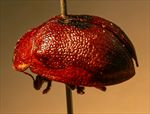
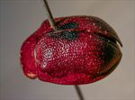
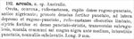
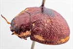

Click on images to enlarge
.jpg){kind=link}

Fig. 1. Paropsis arcula type specimen, lateral view
.jpg){kind=link}

Fig. 2. Paropsis arcula type specimen, dorsal view
{kind=link}

Fig. 3. Paropsis arcula, description
{kind=link}

Fig. 4. Ta21 (Carrow Brook, N.S.W.)
Name
Paropsis arcula Chapuis, 1877
Corresponds to
No closer locality than Australia is given by Chapuis. However, the size of this species and its HCE/BL value, along with the shape of the black patch straddling the elytral summit (widening from front to back) and the explanate pronotal margins suggest that this may be Ta21, in particular, the slighly larger variety of this species (Fig. 4) that is found in higher-altitude locations in central and northern N.S.W.
Diagnosis and Notes
Blackburn did not see the type of this species, but based its inclusion in his key on the description alone. He places the species into his "Group iv" of Paropsis, which consists of mostly of what are now Peltoschema and Paropsisterna species, but includes a few Trachymela lacking verrucae. Within this group (Blackburn, 1897), he characterizes arculata as
A. Elytra with a distinct subbasal impression;
B. Lateral margins of prothorax quite strongly explanate.
Type specimen
Location: RBINS
Label data: /“Coll. Chapuis”/ “TYPE”/ “P. arcula Chp”/ “Type”/ “Trachymela arcula (Chap) ref. M. Daccordi 2007”/.
Female, quite uniformy punctured, mostly brown with a fairly large, black common area around elytral summit; HCE/BL ~ 17% (estimate from a photograph of lateral view of type).
Original description
Translation of original description (Figure 3) by ChatGPT, 03/2026:
Ovate, convex, reddish-chestnut; head densely rugose-punctate, anteriorly blackish; pronotum densely and strongly punctured, laterally depressed and rugose-punctate, bordered with dark reddish-chestnut; elytra strongly and densely punctate-striate, transversely somewhat rugulose, with a common large black spot before the middle; interstices punctulate, some slightly raised. Length 9 mm. Australia.
References
Blackburn, T. 1897, "Revision of the genus Paropsis. Part II", Proceedings of the Linnean Society of New South Wales, vol. 22, 166-189 (page 182).
Copyright © 2026. All rights reserved.